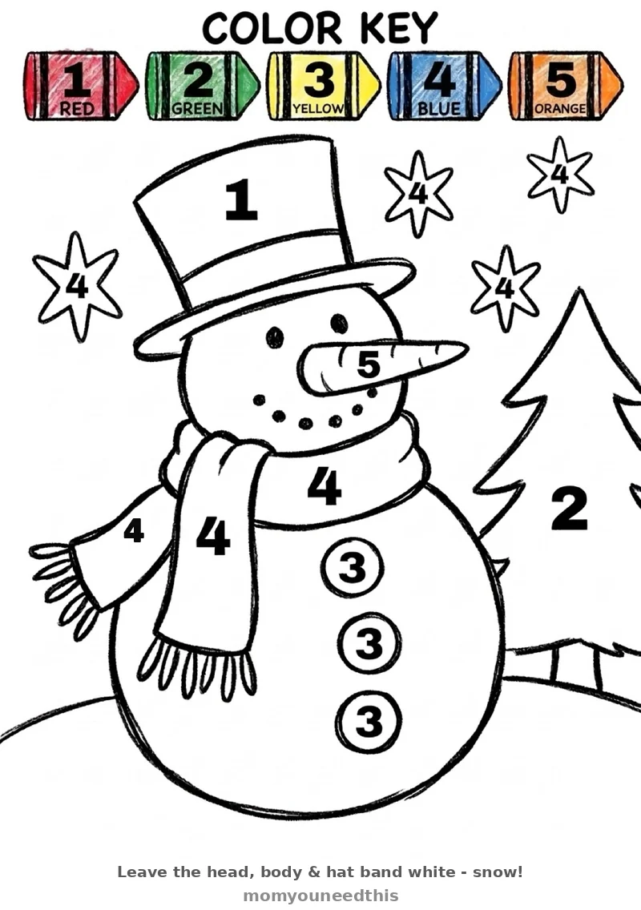

Snowman Paint by Numbers Free Color-by-Number Printable, Ages 3+
Quick Answer
This free snowman paint by numbers printable is made for ages 3 and up: big numbered sections, large clear numbers, and 5 colors on the shared color key — the full key. The finished picture is a winter scene: a snowman with a red top hat, a blue scarf, yellow buttons, and an orange carrot nose, plus a green pine tree and snowflakes. The snowman himself needs no crayon — his body is the white of the paper, built entirely out of the sections around him.
At a Glance
- Activity: Snowman Paint by Numbers
- Ages: 3+
- Colors: 5 (1 = Red, 2 = Green, 3 = Yellow, 4 = Blue, 5 = Orange)
- Sections: Extra-large, numbered
- Supplies: Printed sheet + crayons
- Time: ~15 min

🎨 Color Key for This Sheet
This sheet uses 5 colors from the shared key. The numbers mean the same thing on every sheet — 1 is always red, 2 is always green, and so on.
| Number | Color | What it colors |
|---|---|---|
| 1 | Red | top hat |
| 2 | Green | pine tree |
| 3 | Yellow | buttons |
| 4 | Blue | scarf and snowflakes |
| 5 | Orange | carrot nose |
The snow ground stays white — kids color the tree, scarf, snowflakes, and carrot.
🖍️ How to Color This Sheet
- Set out the crayons. All 5 colors from the key — red, green, yellow, blue and orange. The snowman uses the whole key, so the full set goes on the table.
- Point at the key together. “5 is orange” — find the carrot nose and hold the orange crayon over it. It is the sheet's smallest, funniest section, and one demo there teaches the whole game.
- Let them work in any order. Dress him first — hat, scarf, buttons — or grow the pine tree before he gets his nose. Both are correct. The rule is just: number matches color. (His body gets no number — snow is already white.)
- Say the numbers and colors out loud. “That's a 1 — red, the hat!” turns each section into a tiny number-and-color quiz.
🧠 What Kids Learn From This Snowman Sheet
The snowman teaches the most counterintuitive lesson in this set: a figure can be drawn entirely by coloring everything except the figure. His body has no sections and no numbers — it is the paper, given shape by the hat, scarf, buttons and nose placed on it and the tree and sky around it. Children who finish this sheet have met negative space, the idea artists use constantly, without ever hearing the term.
What does get colored is a study in small, named parts: a top hat, a scarf, three buttons, a carrot nose. Each is a separate find-match-fill problem, and together they are also a dressing sequence — the order you would actually dress a snowman. The green pine tree beside him repeats the lesson at scene scale: color the surroundings, and the white shape between them becomes a snowman.
The snowflakes reward a light hand and provide natural pauses between the bigger jobs — small sections scattered across the page that keep the scanning skill working until the very end.
🎨 Make It Your Own
The color key is a starting point, not a rule. Once your child has colored the snowman the “right” way, print another copy and let them build a wild one: a green hat, a rainbow scarf, buttons in every color — or break the sheet's deepest rule and color the snowman himself blue, pink, or glittery. He is made of snow; snow at sunset does turn pink, so even the wild version has an alibi.
A cozy variation: color the scene as a night picture — dark sky if you print on colored paper, or heavy crayon around the edges — and let the white snowman glow in the middle of it. The negative-space trick works even better after dark.
🖍️ More Paint by Numbers Sheets
Try another sheet — same color key, new picture.
👨👩👧 A Quiet Activity That Actually Works
The snowman is winter's all-purpose quiet sheet: he suits December, but he also suits January and February, when the holidays are over and the snow is still very much the point. One page, five crayons, and a picture that reveals itself backwards — accessories first, snowman last — keep a preschooler occupied through a soup simmering, a sibling's nap, or a long dark afternoon.
Because so much of the picture is white paper, finished snowmen look clean and bright on the fridge — and they pair naturally with the Santa and reindeer sheets as a winter set. Print the trio across the season and your child ends up with a gallery.
❓ Snowman Paint by Numbers FAQs
How does the snowman paint by numbers sheet work?
Each section of the snowman picture has a number. Match the number to the color key (1 = Red, 2 = Green, 3 = Yellow, 4 = Blue, 5 = Orange), pick up that crayon, and color the section. The top hat is red (1), the pine tree is green (2), the buttons are yellow (3), the scarf is blue (4), and the carrot nose is orange (5). The snowman's body has no number — it stays the white of the paper.
What age can kids do this snowman paint by numbers sheet?
Ages 3 and up. This sheet uses 5 colors and extra-large numbered sections, so preschoolers can manage it. The accessories are small-to-medium sections and the snowman's body needs no coloring at all, which makes the sheet feel achievable even though it uses the full key.
Is this snowman paint by numbers printable free?
Yes — completely free, no signup or email required. Download the PDF, print it, and color it as many times as you like. Finished snowmen make cheerful winter decorations well past Christmas.
📚 Keep Exploring
- 🎨 All Paint by Numbers Sheets 8 free color-by-number printables for kids.
- ✏️ Drawing Tutorials 76 free step-by-step drawing tutorials for kids.
- 🎁 Free Resources Free printables and resources for busy moms.